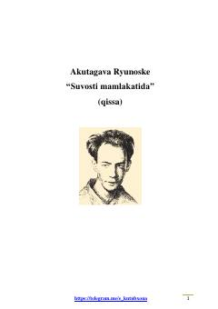

SMYapon yozuvchisi Akutagavaning kappalar dunyosi haqidagi falsafiy-satirik qissasi.
Ruhiy kasalliklar shifoxonasida davolanayotgan yosh bemor o'zining g'aroyib sarguzashtini hikoya qilib beradi. U tog'da adashib, tasodifan kappalar — yapon afsonalaridagi suvosti maxluqlari yashaydigan sirli dunyoga tushib qoladi. Ushbu qissa insoniyat jamiyati va axloqiy qadriyatlarni o'ziga xos satirik nigoh bilan tahlil qiladi.